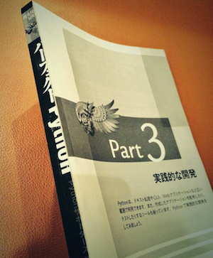

物理的な意味での本の切り方とメリット
概要
読みたい本があって、でもそのままだと持ち歩くのが面倒、、みたいなのにvsする話。
本を読みやすくするためのたったひとつの工夫について押し付けがましくつらつら書く。
がんばりたくない。
本を読む上での障害のうち、殺せるものを殺す
本を読む際、あまたの障害がある。
場所に由来するものだったり、
持ち運びに由来するものだったり、
時間に由来するものだったり。
それらを最小にすることができれば、本を読むハードルはちょっと下がりそう。
SPOF for Reading
以下の障害が良くある感じで、殺したい。
・本が分厚い
鞄に入らねーっつーの。
・本が重くて持つ手が疲れる
重いのはツラい。手のHPがガンガン減ってく。部位破壊される。
・本が分厚くてめくったページを保持してる指が疲れる
指のHPがry 部位破壊さry
・まだ全然ページ数あるんですけど的な心の挫け
分厚い＝読み終わりまでの距離がツラい方向で可視化されてる感じでツラい
・何読んでるかバレるとつらい
なんだこの羞恥プレイ、みたいな。 いや電車とかで読むなよみたいな本、自分は電車で読まないけど。主観だしな。
Solution
切れ。

厚みは減るし
軽くなるし
指疲れなくなるし
心挫けなくなるし
何読んでるかもバレない、、かもしれない。 、、っていうか切るページによってはより過酷な意味でヤバさがダイレクトに外に伝わる。たのしry
手順
1.カバーを捨てる
いらねえ
2.目次を読んで、自分が読みたい部分 と、分割する厚さ的にちょうどいい部分 の折衷案のページを探す
技術書だったら章の区切りとかがイイ感じ。
クソみたいに分厚い本があったとして、
どこを切るか決めたら、まんなかあたりのポイントから切る。
はじのポイントから切ってしまうと、他のポイントを切ろうとした時、バランスが悪くて真っすぐ切りにくいため。
3.カッターを用意して、本を「これ以上難しいですわー」みたいなとこまで開き、奥のゴムの部分を切る
本の背表紙の頑丈さによるが、切断したいポイントを一度思いっきり開いてみる。
次に、カッターの刃の長さが貫通するだけの厚さ分本を閉じて、できるだけカッターの刃をまっすぐ、本の内側にあてて、背に向けて切っていく。
背表紙側からだとどこから切れば良いのか解らず、かといって完全に開いたまま切ると、真っすぐ切れずに
切断面の近所のページの接着部分を切ってしまう。
本自体をカッターに対する定規にしつつ、本を押さえている背表紙の部品を切る。
一回では到底切れないので、数十回くらいかけてじわじわ背表紙まで切っていくと良い。
数十回カッターをあてて背表紙までカッターの刃先が到達したら、最後に背表紙側からカッターで切ればOK。
このとき本を思いっきり開いて背表紙側に谷を作ると真っすぐ切りやすい。
以上を分割したい場所の数だけ繰り返す。
切ると読む、かどうかは知らない
読むかどうかは、どれだけ読みたいかに依存すると思うので、まあ読みやすくはできるけどみたいな感じ。
自分はこの方法のおかげで積ん読はすくないけど部位で無くしやすい。
あと人の本は勝手に切らない方が良い。
切った本に分母入りでナンバリングとかしておくと、全体像が解って良い。
借りやすいし、貸し易くなる、というメリットもある。
最後に
借りた人、失くさないであげてほしい。